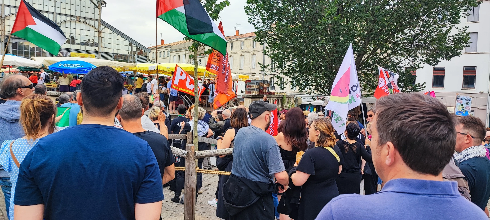

Compte rendu
À Niort, plus de 150 personnes se rassemblent en solidarité avec la Palestine
Date indiquée par Facebook · 14 juin 2025
Repères éditoriaux
Le 14 juin, nous avons rendu compte du rassemblement à Niort en soutien à la Palestine. Notre publication indiquait plus de 150 personnes et la vidéo associée donne à entendre des interventions.
Texte conservé avec la publication
Plus de 150 personnes réunies ce matin à #Niort dans le cadre de la mobilisation nationale en soutien à la Palestine.
A Niort également, ce rassemblement s’inscrit dans le « cadre du week-end mondial de mobilisations, pour un cessez-le-feu immédiat à Gaza et pour un accès sans entraves de l’aide humanitaire ».
Vidéo à suivre très bientôt.

Sources
Archive rouge · export Facebook · AR-0002-FB-01094
À lire aussi · À Niort, des prises de parole en soutien à la Palestine le 14 juin